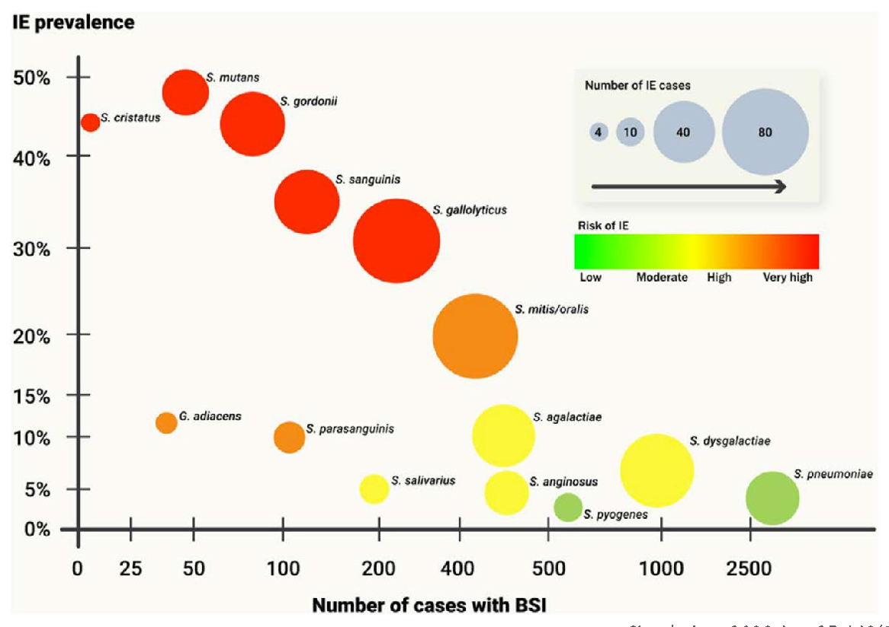

▶ 動画リンクは後日追加予定
本ページで使用する主な略語一覧
| IE | Infective Endocarditis — 感染性心内膜炎 |
| NVE | Native Valve Endocarditis — 自然弁心内膜炎 |
| PVE | Prosthetic Valve Endocarditis — 人工弁心内膜炎 |
| VGS | Viridans Group Streptococci — ビリダンスレンサ球菌群 |
| SAG | S. anginosus Group — アンギノサス群レンサ球菌 |
| HACEK | Haemophilus / Aggregatibacter / Cardiobacterium / Eikenella / Kingella |
| GPC | Gram-Positive Cocci — グラム陽性球菌 |
| GNR | Gram-Negative Rods — グラム陰性桿菌 |
| CNS | Coagulase-Negative Staphylococci — コアグラーゼ陰性ブドウ球菌 |
| TTE | Transthoracic Echocardiography — 経胸壁心エコー |
| TEE | Transesophageal Echocardiography — 経食道心エコー |
| ICD | Implantable Cardioverter-Defibrillator — 植え込み型除細動器 |
| IVDU | Intravenous Drug Use — 静脈内薬物使用 |
| VCM | バンコマイシン（Vancomycin） |
| CTRX | セフトリアキソン（Ceftriaxone） |
| CFZN | セファゾリン（Cefazolin） |
| ABPC | アンピシリン（Ampicillin） |
| GM | ゲンタマイシン（Gentamicin） |
| RFP | リファンピシン（Rifampicin） |
| DAP | ダプトマイシン（Daptomycin） |
| PCG | ペニシリンG（Penicillin G） |
| CPFX | シプロフロキサシン（Ciprofloxacin） |
| AMOX | アモキシシリン（Amoxicillin） |
| MIC | Minimum Inhibitory Concentration — 最小発育阻止濃度 |
| OR | Odds Ratio — オッズ比 |
症例1 — 亜急性経過の IE
Case 1 — Subacute Infective Endocarditis
CASE 1 / HISTORY
病歴・現病歴
患者背景・主訴
74歳男性 — 亜急性経過の発熱・倦怠感
- 既往：高血圧症、心房細動
- 現病歴：1ヶ月前から倦怠感・微熱・食欲不振・体重減少あり。3日前に悪寒を伴う38.5度の発熱で近医受診→コロナ陰性で解熱薬処方→改善せず救急受診
- ROS：軽度呼吸困難・両側下腿浮腫あり。頭痛・胸痛・咳嗽・腹痛・背部痛・関節痛・筋肉痛なし
- バイタル：意識清明、BP 120/75、PR 110 不整、RR 24、BT 38.8、SpO₂ 95% on RA
亜急性発熱の注意点
亜急性の発熱（1ヶ月）＋心房細動既往。安易に経口抗菌薬を投与して誤魔化さないことが最重要。
身体所見
- HEENT：結膜点状出血（conj petechiae）＋、口腔内不衛生（poor oral hygiene）
- CV：S1/S2 正常。不整脈（Af）。3LSBで拡張期雑音 III/VI（大動脈弁）＋ 心尖部で全収縮期雑音 II/VI（僧帽弁）
- EXT：Janeway病変＋、Osler結節 –、両下腿浮腫＋
Janeway病変は手掌・足底の無痛性出血性丘疹（塞栓による）。Osler結節は指趾の有痛性結節（免疫複合体沈着による）。両者はIEの末梢血管徴候として重要。
検査所見
CBC
WBC 9,500 /μL
Hb 11.4 g/dL
Plt 174×10³ /μL
Chemistry
BUN 11.3 / Cr 0.59 mg/dL
AST 11 / ALT 8 / LDH 164 IU/L
CRP 4.4 mg/dL
NT-proBNP 2,194 pg/mL
Urinalysis
OB＋、Pro 2+
WBC –、Nit –
CRPは軽度上昇（4.4）にとどまるが、NT-proBNPが著明高値→弁機能不全による心不全の合併を示唆。亜急性IEはCRPが低めになることがある。
TTE所見 — 大動脈弁（NCC）に疣贅
疣贅確認
大動脈弁 NCC（non-coronary cusp）に 13 mm × 4 mm の疣贅（vegetation）を確認。
血液培養結果 → 標的治療
- 3セットから GPC in chain（グラム染色で溶血なし）
- 最終同定：Streptococcus gallolyticus subsp. gallolyticus
治療経過まとめ
- 経験的治療：バンコマイシン＋セフトリアキソンで開始
- GPC in chain、溶血なし → S. gallolyticus か腸球菌を考慮 → アンピシリンに変更
- 最終同定 S. gallolyticus subsp. gallolyticus → アンピシリン単剤で合計4週間
- 心不全徴候あり → 手術施行（大動脈弁置換）
大腸腫瘍の検索
S. gallolyticus subsp. gallolyticus が血液培養陽性になれば必ずIEを疑い、大腸腫瘍（大腸癌・腺腫）を検索すること！
症例2 — 急性経過の IE（右心系）
Case 2 — Acute Right-Sided Endocarditis with Device Infection
CASE 2 / HISTORY
病歴・現病歴
患者背景・主訴
41歳男性 — 急性経過の発熱・悪寒戦慄
- 既往：ARVC（不整脈原性右室心筋症）に対して12年前にICD植え込み
- 現病歴：3日前に悪寒戦慄を伴う40度の発熱で近医受診→コロナ陰性で解熱薬処方→改善せず救急受診
- ROS：吸気時胸痛・腰背部痛あり
- バイタル：意識清明、BP 110/63、PR 120 整、RR 22、BT 39.1、SpO₂ 99% on RA
急性の発熱＋ICD植え込みデバイス既往
デバイス関連感染（CIED感染）→ IEへの波及を考慮する。
身体所見
- HEENT：結膜点状出血（conj petechiae）＋、口腔内不衛生
- CV：規則正常律、3LSBで全収縮期雑音 II/VI（三尖弁）。ICD植え込み部位に圧痛なし
- BACK：L4-5に椎体圧痛（硬膜外膿瘍の合併要注意）
- EXT：Janeway病変＋、Osler結節 –
検査所見
CBC
WBC 12,100 /μL
Hb 14.6 g/dL
Plt 1.6×10³ /μL
Chemistry
BUN 32.1 / Cr 1.36 mg/dL
AST 48 / ALT 49 / LDH 428 IU/L
CRP 33.9 mg/dL
Na 124 mEq/L（低ナトリウム血症）
Urinalysis
OB 2+、Pro 2+
WBC –、Nit –
CRP 33.9 と著明上昇。症例1（CRP 4.4）との対比が典型的。血小板の著減（1.6×10³）も特徴的で敗血症の重症度を示す。
TTE・TEE所見 — 三尖弁に巨大疣贅
三尖弁に 20 mm × 16 mm の可動性良好な巨大疣贅
10 mm 以上は塞栓リスクとなりうる。
CT胸部 — 敗血症性肺塞栓・左膿胸
右心系IEでは三尖弁の疣贅が遊離して肺塞栓（敗血症性肺塞栓症）を生じる。本症例では左膿胸への進展も認めた。
血液培養結果 → 標的治療
- 3セットから GPC in cluster
- 最終同定：Staphylococcus aureus（MSSA）
治療経過まとめ
- 経験的治療：バンコマイシン＋セフトリアキソン（硬膜外膿瘍の可能性を考慮、セフトリアキソンは中枢移行性を担保）
- GPC in cluster → MSSA / MRSAまたはCNSを考慮 → VCM＋CTRX継続
- MSSA同定 → セフトリアキソン単剤に変更（ICDリード抜去後にMRI施行し硬膜外膿瘍を除外 → セファゾリン単剤に変更）
- 合計6週間投与
- 疣贅 10 mm 超＋塞栓症状あり → 手術施行（三尖弁手術＋リード抜去）
セファゾリンの中枢移行性
MSSAの中枢神経感染症（硬膜外膿瘍等）では、セファゾリンの中枢移行性は不良なため、セフトリアキソンを選択する。MRI でCNS感染症を除外後にセファゾリンに戻す。
IEを起こしやすい起因菌
Causative Organisms — Mostly Gram-Positive Cocci
ORGANISMS
IEの主な起因菌
ほとんどがGPC（グラム陽性球菌）
IEの起因菌は圧倒的にGPCが多い。GPCを大きく「cluster（ブドウ状）」と「chain（連鎖状）」に分けて考えると整理しやすい。
GPC cluster — ブドウ球菌属（Staphylococcus）
- Staphylococcus aureus（黄色ブドウ球菌）
MSSA → セファゾリン／MRSA → バンコマイシン
- Coagulase-negative staphylococci（CNS）
S. epidermidis・S. lugdunensisなど → バンコマイシン
GPC chain — レンサ球菌群（Streptococcus）
- Viridans Group Streptococci（VGS）：口腔内常在菌
S. mitis/oralis・S. mutans・S. gordoniiなど — Non-anginosus group
- Streptococcus gallolyticus：腸管常在菌、IE との関連・大腸腫瘍との関連あり
- Enterococcus faecalis（腸球菌）
GNR — HACEK群（グラム陰性桿菌）
HACEKは口腔内に常在するGNRで発育が遅い（培養は7日以上）。
- Haemophilus spp.
- Aggregabibacter spp.
- Cardiobacterium hominis
- Eikenella corrodens
- Kingella spp.
治療：セフトリアキソン、アンピシリン・スルバクタム、キノロン系
KEY ORGANISM
S. gallolyticus — IEと大腸腫瘍の重要な関連
S. gallolyticus の臨床的重要性
S. gallolyticus はさらに S. gallolyticus subsp. gallolyticus（旧 S. bovis biotype I）とその他のsubspに分けられる。ざっくりまとめると以下の2点が臨床的に重要。
- 口腔内・腸管内の常在菌であり、非常にIEを起こしやすい（OR 16.61、95%CI 8.85–31.16）
- 大腸腫瘍（大腸癌・大腸腺腫）と強く関連している（OR 7.26、95%CI 3.94–13.36）
大腸腫瘍を必ず検索
S. gallolyticus subsp. gallolyticus が血液培養から検出された場合は、IE を強く疑い、同時に大腸内視鏡検査で大腸腫瘍を必ず検索すること。
Clin Infect Dis. 2011 Nov;53(9):870-8.
VGS（ビリダンスレンサ球菌群）とIEの関連

VGS 各菌種の IE 原因菌としての割合（Circulation 2020）
Circulation. 2020 Aug 25;142(8):720-730.
GPC MAP / REVIEW
GPCマップを整理しよう
GPCマップ — cluster vs chain
🔴 GPC cluster（ブドウ状）— Staphylococcus属
S. aureus
MSSA → セファゾリン
MRSA → バンコマイシン
CNS（コアグラーゼ陰性）
S. epidermidis・S. lugdunensis
バンコマイシン
🔵 GPC chain（連鎖状）— Streptococcus / Enterococcus属
α溶血（VGS / S. gallolyticus / S. pneumoniae）
S. mitis・S. mutans・S. gordonii
S. gallolyticus（腸管常在）
ペニシリンG / アンピシリン
β溶血（GAS・GBS・SAG・GGS）
S. pyogenes（GAS）・S. agalactiae（GBS）
SAG（S. anginosus・S. constellatus・S. intermedius）
SDSE（Group G）
ペニシリンG
γ溶血（Enterococcus）
E. faecalis・E. faecium
バンコマイシン（単剤では静菌的 → 併用が必要）
新しいDuke診断基準
Modified Duke Criteria — Major and Minor Criteria
DUKE CRITERIA
大基準・小基準
大基準（Major Criteria）— 3項目
① 微生物学的検査
- IEに典型的な細菌（*1）が血液培養で2セット以上陽性
- 心臓内人工物がある場合、以下（*2）も典型的な細菌として扱う
*1 IEに典型的な細菌（自然弁）
S. aureus、S. lugdunensis、Enterococcus faecalis、HACEK群、全てのレンサ球菌（S. pneumoniae・S. pyogenesを除く）、Granulicatella spp.、Abiotrophia spp.、Gemella spp.
※ Coxiella burnetti・Bartonella spp.・Tropheryma whipplei はPCRや抗体法で検索
*2 人工物あり — 追加で典型的とみなす細菌
CNS（S. epidermidisなど）、Corynebacterium striatum・C. jeikeium、Serratia marcescens、Pseudomonas aeruginosa、Cutibacterium acnes、NTM、Candida
② 画像検査
心エコー（TTE/TEE）・心臓CT・PET-CTで疣贅（vegetation）または膿瘍（abscess）を確認
③ 手術所見
術中の肉眼所見で疣贅・膿瘍を確認
小基準（Minor Criteria）— 7項目
| 項目 | 内容 |
|---|
| ① 素因 |
僧帽弁逸脱症・先天性心疾患・IVDU・経カテーテル弁埋め込み/形成術後・血管内植え込み型心臓デバイス（ICD・CRT等）・IEの既往 |
| ② 発熱 |
38度以上の発熱 |
| ③ 血管現象 |
塞栓・Janeway病変・点状出血・頭蓋内出血・脾膿瘍・脳膿瘍 |
| ④ 免疫学的現象 |
Osler結節・RF陽性・Roth斑・糸球体腎炎（原因不明のAKIまたは慢性腎障害にAKIが合併し、血尿・蛋白尿・尿沈渣で細胞円柱のうち2つ以上） |
| ⑤ 微生物 |
大基準を満たさない細菌、またはPCRなどで典型的な微生物の所見あり |
| ⑥ 身体所見 |
心エコーができない場合に限り、新規の逆流性心雑音を聴取 |
| ⑦ 画像所見 |
人工弁であればPET-CTで異常な集積を認める |
診断区分
| 診断 | 基準 |
|---|
| Definite IE |
- ● 大基準 2つ
- ● 大基準 1つ ＋ 小基準 3つ
- ● 小基準 5つ
|
| Possible IE |
- ● 大基準 1つ ＋ 小基準 1つ
- ● 小基準 3つ
|
| Rejected IE |
- ● 他の診断が確立されている
- ● 4日以内の抗菌薬治療で再発がない
- ● 4日以内の抗菌薬治療で病理学的・微生物学的証拠がない
- ● 上記基準を満たさない
|
経験的抗菌薬治療
Empiric Antimicrobial Therapy
EMPIRIC THERAPY
想定される起因菌をカバーする
経験的治療の基本的考え方
IEの経験的治療は「想定される起因菌すべてをカバーする」ことが基本。主な起因菌（MRSA・MSSA・レンサ球菌・腸球菌・HACEK）を視野に入れて選択する。
推奨レジメン
レジメン A（標準）
バンコマイシン ＋ セフトリアキソン
硬膜外膿瘍など中枢感染の可能性がある場合はこちら（CTRX は中枢移行性良好）
レジメン B
バンコマイシン ＋ セファゾリン
中枢感染の可能性が低い場合
各薬剤のカバー範囲
| 薬剤 | カバーする主な菌 |
|---|
| バンコマイシン |
MRSA・MSSA・レンサ球菌（VGS・S. gallolyticus）・腸球菌 |
| セフトリアキソン |
MSSA・レンサ球菌（VGS・S. gallolyticus）・HACEK
中枢移行性良好、硬膜外膿瘍合併時に選択 |
| セファゾリン |
MSSA・レンサ球菌（VGS・S. gallolyticus）
中枢感染を除外できた場合のMSSA NVE標準選択 |
標的抗菌薬治療
Targeted Antimicrobial Therapy — By Organism
TARGET / STREPTOCOCCUS
VGS・S. gallolyticus
VGS・S. gallolyticus
Viridans Group Streptococci / S. gallolyticus
レンサ球菌系
ペニシリン感受性（MIC ≤ 0.125 μg/mL） — 自然弁 4週間 / 人工弁 6週間
- ペニシリンG 300〜400万単位 × 4時間ごと（q4h）
- アンピシリン 2 g × 4時間ごと（q4h）
- セフトリアキソン 2 g × 24時間ごと（q24h）
↑ いずれか1剤を選択。投与期間は自然弁 4週間、人工弁は 6週間。
ペニシリン低感受性（MIC 0.25〜2 μg/mL）
- 上記いずれか ＋ ゲンタマイシン 3 mg/kg/day を2週間併用
TARGET / MSSA
MSSA（メチシリン感受性黄色ブドウ球菌）
MSSA
Methicillin-Susceptible S. aureus
ブドウ球菌系
NVE（自然弁） — 6週間
- 中枢神経感染症がない場合：セファゾリン 2 g q8h × 6週間
- 中枢神経感染症がある場合：セフトリアキソン 2 g q12h × 6週間
セファゾリンの中枢移行性は不良なためCTRXに変更。MRIで硬膜外膿瘍を除外後はCFZNに戻す。
セファゾリンの中枢移行性
セファゾリンは中枢移行性が不良。硬膜外膿瘍・髄膜炎が疑われる場合はセフトリアキソンを選択。
TARGET / MRSA
MRSA（メチシリン耐性黄色ブドウ球菌）
MRSA
Methicillin-Resistant S. aureus
ブドウ球菌系
NVE（自然弁） — 6週間
- 中枢神経感染症がない場合：
- バンコマイシン 30 mg/kg/day × 6週間
- ダプトマイシン 10 mg/kg/day × 6週間
- 中枢神経感染症がある場合：
- バンコマイシン 30 mg/kg/day × 6週間以上
ダプトマイシンの中枢移行性は不良なためVCMを選択。
PVE（人工弁） — 6週間以上
- バンコマイシン ＋ リファンピシン × 6週間以上
TARGET / ENTEROCOCCUS
腸球菌（Enterococcus faecalis）
腸球菌によるIEの特徴と治療戦略
Enterococcus faecalis（EF）は弱毒だが、IEを起こすことが知られている。以下の特性を理解して治療戦略を立てる。
- セファロスポリン系は in vitro で無効（ただしセフトリアキソンとの相乗効果を利用）
- アンピシリンが第1選択だが、単剤では静菌性にしか作用しない
- 歴史的にはゲンタマイシンを併用して殺菌性を担保してきた
- 高齢者・腎機能低下患者ではゲンタマイシンは使用しにくい → アンピシリン＋セフトリアキソンの登場
腸球菌 E. faecalis
Enterococcus faecalis IE
腸球菌
レジメン A（従来法） — 6週間
- アンピシリン 2 g q4h × 6週間
- ＋ ゲンタマイシン 3 mg/kg/day × 2週間（腎毒性に注意）
レジメン B（現在推奨・腎機能低下患者に有利） — 6週間
- アンピシリン 2 g q4h × 6週間
- ＋ セフトリアキソン 2 g q12h × 6週間
セフトリアキソンはEFのPBP（ペニシリン結合タンパク）を一部飽和させ、アンピシリンの殺菌効果を増強する。
アンピシリン＋セフトリアキソン vs アンピシリン＋ゲンタマイシン
推奨レジメンの根拠
死亡率に差はなく、有害事象（腎毒性等）はゲンタマイシン群で有意に多い。現在はアンピシリン＋セフトリアキソンが推奨される。
Clin Infect Dis. 2013 May;56(9):1261-8.
TARGET / HACEK
HACEK群（口腔内常在GNR）
HACEK群
HACEK — Gram-Negative Oral Commensals
GNR
自然弁 4週間 / 人工弁 6週間
- セフトリアキソン 2 g q24h
- アンピシリン/スルバクタム 3 g q6h
- シプロフロキサシン 400 mg q8h
HACEK は発育が遅いため培養は7日以上行う。
Eur Heart J. 2015 Nov 21;36(44):3075-3128.
DENOVAスコア
E. faecalis 菌血症に対してTEEが必要かどうかを判断するスコア
DENOVA SCORE
E. faecalis 菌血症でTEEは必要か？
DENOVAスコアの各項目（各1点）
Enterococcus faecalis が血液培養から検出された際に、心エコー（特にTEE）が必要かどうかを判断するためのスコア。
N
Number of positive cultures
陽性培養セット数が2以上
A
Auscultation of murmur
心雑音の聴取
≥ 3点
感度 100%
特異度 85%
→ TEE を施行
Infection. 2019 Feb;47(1):45-50.
手術適応
Surgical Indications
SURGERY
手術を考慮すべき状況
主な手術適応
① 心不全
弁破壊による逆流・弁口狭窄による心不全（最も緊急性が高い）
② 複雑性感染症（局所波及）
弁輪周囲膿瘍・瘻孔・伝導障害（AVブロック）
③ 難治性起因菌
真菌（Candida等）・多剤耐性菌
④ 持続性感染症
血液培養が持続的に陽性（抗菌薬治療下でも菌血症継続）
⑤ 大きな疣贅
10 mm 以上の疣贅は塞栓リスクとなりうる（症例2：20 mm × 16 mm → 手術施行）
Circulation. 2015 Oct 13;132(15):1435-86.
IEの予防
Prophylaxis — Dental Procedures and High-Risk Patients
PREVENTION
歯科治療前の予防抗菌薬
IEの高リスク患者に対する予防の考え方
IEの高リスク患者（人工弁・先天性心疾患・IE既往・心移植後）が侵襲的な歯科治療を受ける際に、IEを起こしやすいことが示されている。
歯科治療によるIEリスク
OR 11.08
抜歯によるIEリスク
（95%CI 7.34–16.74、P<0.0001）
OR 50.77
口腔外科手術によるIEリスク
（95%CI 20.79–123.98、P<0.0001）
予防法
アモキシシリン 2 g（8錠）
侵襲的歯科治療の 60分前 に内服
予防による効果
OR 0.13
抜歯時のIE予防効果
（95%CI 0.03–0.34、P<0.0001）
OR 0.09
口腔外科手術時のIE予防効果
（95%CI 0.01–0.35、P=0.002）
予防抗菌薬の徹底
高リスク患者の侵襲的歯科治療前には必ずアモキシシリン 2 g を術前60分に内服させる。これを徹底することがIEの再発予防に極めて重要。
SUMMARY
Take Home Message
①
IEは亜急性・急性の2つの経過をとる：安易に経口抗菌薬を投与して誤魔化さず、発熱＋心雑音・末梢血管徴候（Janeway・Osler）・リスク因子があれば必ずIEを鑑別する。
②
起因菌はほとんどがGPC：経験的治療はバンコマイシン＋セフトリアキソン（または＋セファゾリン）。中枢感染の疑いがあればセフトリアキソンを選択する。
③
S. gallolyticus が血液培養から出たら大腸腫瘍を検索：IEリスク（OR 16.61）に加え、大腸腫瘍との関連（OR 7.26）があるため、必ず大腸内視鏡で精査する。
④
腸球菌IEにはアンピシリン＋セフトリアキソンが有用：アンピシリン＋ゲンタマイシンと死亡率に差はないが有害事象（腎毒性）が少ない。高齢者・腎機能低下症例に特に有用。
⑤
高リスク患者の歯科治療前には予防抗菌薬を徹底：人工弁・先天性心疾患・IE既往・心移植患者が侵襲的歯科治療を受ける際はアモキシシリン 2 g を術前60分に内服させる。
講義資料：ID×ICUカンファレンス「感染性心内膜炎」 森 信好先生（聖路加国際病院感染症科医長）2025年9月11日作成 / 2026年4月10日講義
本資料は教育目的で作成したレジュメです。診断・治療方針の決定には必ず最新のガイドラインおよび専門医への相談を行ってください。
講義：森先生（感染症科） ／ 制作：ICU 関谷